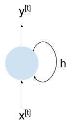
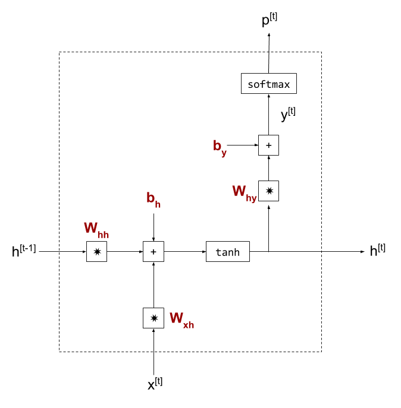
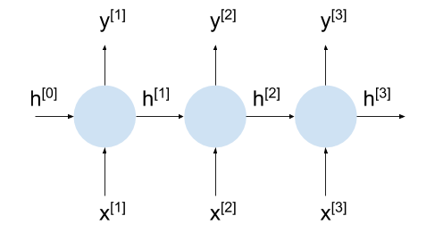
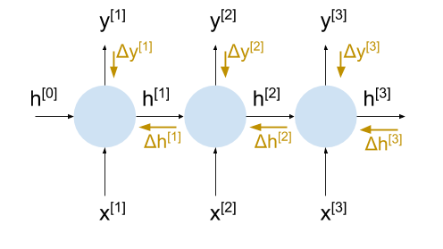

In a single gist, Andrej Karpathy did something truly impressive. In a little over 100 lines of Python - without relying on any heavy-weight machine learning frameworks - he presents a fairly complete implementation of training a character-based recurrent neural network (RNN) language model; this includes the full backpropagation learning with Adagrad optimization.
I love such minimal examples because they allow me to understand some topic in full depth, connecting the math to the code and having a complete picture of how everything works. In this post I want to present a companion explanation to Karpathy's gist, showing the diagrams and math that hide in its Python code.
My own fork of the code is here; it's semantically equivalent to Karpathy's gist, but includes many more comments and some debugging options. I won't reproduce the whole program here; instead, the idea is that you'd go through the code while reading this article. The diagrams, formulae and explanations here are complementary to the code comments.
What RNNs do
I expect readers to have a basic idea of what RNN do and why they work well for some problems. RNN are well-suited for problem domains where the input (and/or output) is some sort of a sequence - time-series financial data, words or sentences in natural language, speech, etc.
There is a lot of material about this online, and the basics are easy to understand for anyone with even a bit of machine learning background. However, there is not enough coherent material online about how RNNs are implemented and trained - this is the goal of this post.
Character-based RNN language model
The basic structure of min-char-rnn is represented by this recurrent diagram, where x is the input vector (at time step t), y is the output vector and h is the state vector kept inside the model.
The line leaving and returning to the cell represents that the state is retained between invocations of the network. When a new time step arrives, some things are still the same (the weights inherent to the network, as we shall soon see) but some things are different - h may have changed. Therefore, unlike stateless NNs, y is not simply a function of x; in RNNs, identical xs can produce different ys, because y is a function of x and h, and h can change between steps.
The character-based part of the model's name means that every input vector represents a single character (as opposed to, say, a word or part of an image). min-char-rnn uses one-hot vectors to represent different characters.
A language model is a particular kind of machine learning algorithm that learns the statistical structure of language by "reading" a large corpus of text. This model can then reproduce authentic language segments - by predicting the next character (or word, for word-based models) based on past characters.
Internal-structure of the RNN cell
Let's proceed by looking into the internal structure of the RNN cell in min-char-rnn:
- Bold-faced symbols in reddish color are the model's parameters, weights for matrix multiplication and biases.
- The state vector h is shown twice - once for its past value, and once for its currently computed value. Whenever the RNN cell is invoked in sequence, the last computed state h is passed in from the left.
- In this diagram y is not the final answer of the cell - we compute a softmax function on it to obtain p - the probabilities for output characters [1]. I'm using these symbols for consistency with the code of min-char-rnn, though it would probably be more readable to flip the uses of p and y (making y the actual output of the cell).
Mathematically, this cell computes:
Learning model parameters with backpropagation
This section will examine how we can learn the parameters W and b for this model. Mostly it's standard neural-network fare; we'll compute the derivatives of all the steps involved and will then employ backpropagation to find a parameter update based on some computed loss.
There's one serious issue we'll have to address first. Backpropagation is usually defined on acyclic graphs, so it's not entirely clear how to apply it to our RNN. Is h an input? An output? Both? In the original high-level diagram of the RNN cell, h is both an input and an output - how can we compute the gradient for it when we don't know its value yet? [2]
The way out of this conundrum is to unroll the RNN for a few steps. Note that we're already doing this in the detailed diagram by distinguishing between and . This makes every RNN cell locally acyclic, which makes it possible to use backpropagation on it. This approach has a cool-sounding name - Backpropagation Through Time (BPTT) - although it's really the same as regular backpropagation.
Note that the architecture used here is called "synced many-to-many" in Karpathy's Unreasonable Effectiveness of RNNs post, and it's useful for training a simple char-based language model - we immediately observe the output sequence produced by the model while reading the input. Similar unrolling can be applied to other architectures, like encoder-decoder.
Here's our RNN again, unrolled for 3 steps:
Now the same diagram, with the gradient flows depicted with orange-ish arrows:
With this unrolling, we have everything we need to compute the actual weight updates during learning, because when we want to compute the gradients through step 2, we already have the incoming gradient , and so on.
Do you now wonder what is for the final step at time t?
In some models, sequence lengths are fairly limited. For example, when we translate a single sentence, the sequence length is rarely over a couple dozen words; for such models we can fully unroll the RNN. The h state output of the final step doesn't really "go anywhere", and we assume its gradient is zero. Similarly, the incoming state h for the first step is zero.
Other models work on potentially infinite sequence lengths, or sequences much too long for unrolling. The language model in min-char-rnn is a good example, because it can theoretically ingest and emit text of any length. For these models we'll perform truncated BPTT, by just assuming that the influence of the current state extends only N steps into the future. We'll then unroll the model N times and assume that is zero. Although it really isn't, for a large enough N this is a fairly safe assumption. RNNs are hard to train on very long sequences for other reasons, anyway (we'll touch upon this point again towards the end of the post).
Finally, it's important to remember that although we unroll the RNN cells, all parameters (weights, biases) are shared. This plays an important part in ensuring translation invariance for the models - patterns learned in one place apply to another place [3]. It leaves the question of how to update the weights, since we compute gradients for them separately in each step. The answer is very simple - just add them up. This is similar to other cases where the output of a cell branches off in two directions - when gradients are computed, their values are added up along the branches - this is just the basic chain rule in action.
We now have all the necessary background to understand how an RNN learns. What remains before looking at the code is figuring out how the gradients propagate inside the cell; in other words, the derivatives of each operation comprising the cell.
Flowing the gradient inside an RNN cell
As we saw above, the formulae for computing the cell's output from its inputs are:
To be able to learn weights, we have to find the derivatives of the cell's output w.r.t. the weights. The full backpropagation process was explained in this post, so here is only a brief refresher.
Recall that is the predicted output; we compare it with the "real" output () during learning, to find the loss (error):
To perform a gradient descent update, we'll need to find , for every weight value w. To do this, we'll have to:
- Find the "local" gradients for every mathematical operation leading from w to L.
- Use the chain rule to propagate the error backwards through these local gradients until we find .
We start by formulating the chain rule to compute :
Next comes:
Let's say the weight w we're interested in is part of , so we have to propagate some more:
We'll then proceed to propagate through the tanh function, bias addition and finally the multiplication by , for which the derivative by w is computed directly without further chaining.
Let's now see how to compute all the relevant local gradients.
Cross-entropy loss gradient
We'll start with the derivative of the loss function, which is cross-entropy in the min-char-rnn model. I went through a detailed derivation of the gradient of softmax followed by cross-entropy in this post; here is only a brief recap:
Re-formulating this for our specific case, the loss is a function of , assuming the "real" class r is constant for every training example:
Since inputs and outputs to the cell are 1-hot encoded, let's just use r to denote the index where is non-zero. Then the Jacobian of L is only non-zero at index r and its value there is .
Softmax gradient
A detailed computation of the gradient for the softmax function was also presented in this post. For being the softmax of y, the Jacobian is:
Fully-connected layer gradient
Next on our path backwards is:
From my earlier post on backpropagating through a fully-connected layer, we know that . But that's not all; note that on the forward pass splits in two - one edge goes into the fully-connected layer, another goes to the next RNN cell as the state. When we backpropagate the loss gradient to , we have to take both edges into account; more specifically, we have to add the gradients along the two edges. This leads to the following backpropagation equation:
In addition, note that this layer already has model parameters that need to be learned - and - a "final" destination for backpropagation. Please refer to my fully-connected layer backpropagation post to see how the gradients for these are computed.
Gradient of tanh
The vector is produced by applying a hyperbolic tangent nonlinearity to another fully connected layer.
To get to the model parameters , and , we have to first backpropagate the loss gradient through tanh. tanh is a scalar function; when it's applied to a vector we apply it in element-wise fashion to every element in the vector independently, and collect the results in a similarly-shaped result vector.
Its mathematical definition is:
To find the derivative of this function, we'll use the formula for deriving a ratio:
So:
Just like for softmax, it turns out that there's a convenient way to express the derivative of tanh in terms of tanh itself. When we apply the chain rule to derivatives of tanh, for example: where k is a function of w. We get:
In our case k(w) is a fully-connected layer; to find its derivatives w.r.t. the weight matrices and bias, please refer to the backpropagation through a fully-connected layer post.
Learning model parameters with Adagrad
We've just went through all the major parts of the RNN cell and computed local gradients. Armed with these formulae and the chain rule, it should be possible to understand how the min-char-rnn code flows the loss gradient backwards. But that's not the end of the story; once we have the loss derivatives w.r.t. to some model parameter, how do we update this parameter?
The most straightforward way to do this would be using the gradient descent algorithm, with some constant learning rate. I've written about gradient descent in the past - please take a look for a refresher.
Most real-world learning is done with more advanced algorithms these days, however. One such algorithm is called Adagrad, proposed in 2011 by some experts in mathematical optimization. min-char-rnn happens to use Adagrad, so here is a simplified explanation of how it works.
The main idea is to adjust the learning rate separately per parameter, because in practice some parameters change much more often than others. This could be due to rare examples in the training data set that affect a parameter that's not often affected; we'd like to amplify these changes because they are rare, and dampen changes to parameters that change often.
Therefore the Adagrad algorithm works as follows:
# Same shape as the parameter array x
memory = 0
while True:
dx = compute_grad(x)
# Elementwise: each memory element gets the corresponding dx^2 added to it.
memory += dx * dx
# The actual parameter update for this step. Note how the learning rate is
# modified by the memory. epsilon is some very small number to avoid dividing
# by 0.
x -= learning_rate * dx / (np.sqrt(memory) + epsilon)
If a given element in dx was updated significantly in the past, its corresponding memory element will grow and thus the learning rate is effectively decreased.
Gradient clipping
If we unroll the RNN cell 10 times, the gradient will be multiplied by ten times on its way from the last cell to the first. For some structures of , this may lead to an "exploding gradient" effect where the value keeps growing [4].
To mitigate this, min-char-rnn uses the gradient clipping trick. Whenever the gradients are updated, they are "clipped" to some reasonable range (like -5 to 5) so they will never get out of this range. This method is crude, but it works reasonably well for training RNNs.
The flip side problem of vanishing gradient (wherein the gradients keep getting smaller with each step) is much harder to solve, and usually requires more advanced recurrent NN architectures.
min-char-rnn model quality
While min-char-rnn is a complete RNN implementation that manages to learn, it's not really good enough for learning a reasonable model for the English language. The model is too simple for this, and suffers seriously from the vanishing gradient problem.
For example, when training a 16-step unrolled model on a corpus of Sherlock Holmes books, it produces the following text after 60,000 iterations (learning on about a MiB of text):
one, my dred, roriny. qued bamp gond hilves non froange saws, to mold his a work, you shirs larcs anverver strepule thunboler muste, thum and cormed sightourd so was rewa her besee pilman
It's not complete gibberish, but not really English either. Just for fun, I wrote a simple Markov chain generator and trained it on the same text with a 4-character state. Here's a sample of its output:
though throughted with to taken as when it diabolice, and intered the stairhead, the stood initions of indeed, as burst, his mr. holmes' room, and now i fellows. the stable. he retails arm
Which, you'll admit, is quite a bit better than our "fancy" deep learning approach! And it was much faster to train too...
To have a better chance of learning a good model, we'll need a more advanced architecture like LSTM. LSTMs employ a bunch of tricks to preserve long-term dependencies through the cells and can learn much better language models. For example, Andrej Karpathy's char-rnn model from the Unreasonable Effectiveness of RNNs post is a multi-layer LSTM, and it can learn fairly nice models for a varied set of domains, ranging from Shakespeare sonnets to C code snippets in the Linux kernel.
Conclusion
The goal of this post wasn't to develop a very good RNN model; rather, it was to explain in detail the math behind training a simple RNN. More advanced RNN architerctures like LSTM are somewhat more complicated, but all the core ideas are very similar and this post should be helpful in nailing the basics.
Update: An extension of this post to LSTMs.
| [1] | Computing a softmax makes sense because x is encoded with one-hot over a vocabulary-sized vector, meaning there's a 1 in the position of the letter it represents with 0s in all other positions. For example, is we only care about the 26 lower-case alphabet letters, x could be a 26-element vector. To represent 'a' it would have 1 in position 0 and zeros elsewhere; to represent 'd' it would have 1 in position 3 and zeros elsewhere. The output p here models what the RNN cell thinks the next generated character should be. Using softmax, it would have probabilities for each character in the corresponding position, all of them properly summing up to 1. |
| [2] | A slightly more technical explanation: to compute the gradient for the error w.r.t. weights in the typical backpropagation flow, we'll need input gradients for and . Then, when learning happens we use the measured error and propagate it backwards. But what is the measured error for ? We don't know it before we compute the error of the next iteration, and so on - a bit of a chicken-egg problem. Unrolling/BPTT helps approximate a solution for this issue. An alternative solution is to use forward-mode gradient propagation instead, with an algorithm called RTRL (Real Time Recurrent Learning). This algorithm works well but has a high computational cost compared to BPTT. I'd love to explore this topic in more depth, as it ties into the difference between forward-mode and reverse-mode auto differentiation. But that would be a topic for another post. |
| [3] | This is similar to convolutional networks, where the convolution filter weights are reused many times when processing a much larger input. In such models the invariance is spatial; in sequence models the invariance is temporal. In fact, space vs. time in models is just a matter of convention, and it turns out that 1D convolutional models perform very well on some sequence tasks! |
| [4] | An easy way to think about it is to imagine some initial value v, multiplied by another value c many times. We get for N multiplications. If c is larger than 1, it means the result will keep growing with each multiplication. How quickly will depend on the actual value of c, but this is basically an exponential runoff. We actually care about the absolute value of c, of course, since runoff is equally bad in the positive or negative direction. Similarly with the absolute value of c smaller than 1, we'll get a "vanishing" effect since the result will keep getting smaller with each iteration. |